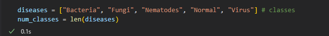
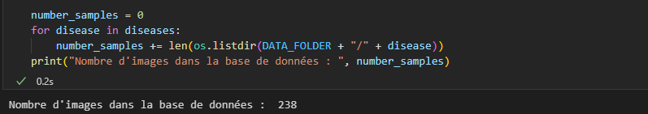
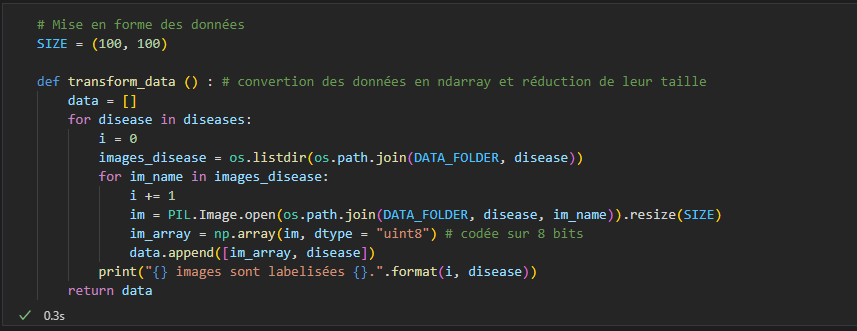
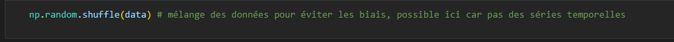
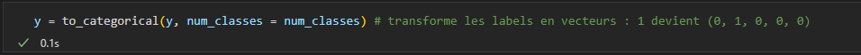

Crédit : Louise Raoult sur Unsplash
Classification des maladies des feuilles par un réseau de convolution
Introduction
On souhaite dans ce projet étudier certaines maladies affectant les feuilles des plantes et des arbres.
Plus particulièrement, on voudrait parvenir, à la donnée d'une feuille quelconque, à déterminer si elle est malade ou pas, et le cas échéant
à classifier le type de mal qui l'affecte. C'est un problème de classification multi-classes. En effet, nous allons faire l'hypothèse que chaque
feuille est soit saine, soit affectée par une unique maladie. La sortie du modèle de classification sera donc "1 choix parmi N classes".
Pour y arriver, nous allons utiliser un réseau de neurones de type CNN (réseau à convolutions).
Les réseaux de neurones sont une classe de modèles qui permettent de faire de la classification mais pas seulement.
On peut également faire de la régression ou de la génération de données. Pour schématiser, un réseau de neurones
est un embriquement (séquentiel le plus souvent) de sous-modèles linéaires, joints par des fonctions dites d'activation, qui sont
non-linéaires. Ce sont ces dernières qui permettent de briser la linéarité du modèle et qui lui permettent d'apprendre une représentation
complexe des données d'entrée.
La famille de réseaux de neurones la plus adaptée au traitement d'images est celle des réseaux de convolution (CNN).
Pour pouvoir entraîner le modèle a reconnaître les maladies des feuilles, il va nous falloir une base de données contenant des images déjà annotées.
Pour chaque image de la base, un label précisera si la feuille est malade ou non, et le cas échéant donnera le nom de la maladie.
La base de données provient du site Kaggle.
Chargement et découverte des données
La liste des librairies nécessaires au projet est disponible au début du notebook (accessible sur mon GitHub).
La première chose à faire est d'explorer le jeu de données pour en connaître la composition. On va afficher une image de chaque maladie pour avoir un aperçu visuel de la diversité des classes.


239 images annotées, c'est (très) peu, surtout pour entraîner un modèle d'apprentissage profond. Ce sera l'occasion d'illustrer certaines techniques d'augmentation de données, afin de faire croître ce nombre avant de l'utiliser pour entraîner un petit modèle. Les images montrent des individus appartenant aux 5 classes du problème (dans l'ordre) : feuille saine, feuille attaquée par des nématodes (vers), feuille attaquée par une bactérie, par un virus et enfin par un champignon.


On peut enfin étudier la répartition des images dans chacune des classes :

Le résultat suggère que chacune des classes possèdent environ 50 représentants dans la base de donnée. Avoir des classes équilibrées en nombre d'individus est bénéfique car le modèle aura plus tendance à apprendre de manière parcimonieuse. En effet, à la limite où une classe est sur-représentée (dans l'ensemble d'entraînement et de validation), il suffit au modèle de savoir correctement gérer les exemples de cette classe pour minimiser sa fonction de coût lors de l'entraînement, ce qui n'est pas le but et risque d'induire une forte erreur de généralisation (sur l'ensemble de test).
Préparation des données
Après avoir chargée les données en couples (image, annotation de classe), on va les mélanger pour avoir un ordre d'apparition aléatoire.

On normalise les valeurs RGB des données d'entrée (couleur) en les divisant par 255 (valeur maximale d'un pixel sur 8 bits).
Cela permettra d'optimiser la vitesse d'entraînement du modèle (marginalement ici, peut-être intéressant sur de plus gros modèles).
Ensuite, on va vectoriser les labels des données. Les labels sont pour l'instant des entiers (0 pour désigner une feuille saine
jusqu'à 4 pour désigner une feuille attaquée par un champignon).
La fonction to_categorical
de Tensorflow (API Python Keras) permet de convertir les labels en vecteurs à 5 composantes
(des 0 partout et un 1 au rang de la bonne classe, pour chaque classe possible parmi les 5).
On sera ainsi compatible avec la sortie du réseau de neurones, dont la dernière couche renvoie un vecteur de probabilité de la taille du
nombre de classes du problème. Nous le détaillerons plus loin, mais si le modèle possède ce format de sortie, c'est grâce à une activation
de type Softmax.

Augmentation des données puis découpage en jeux d'entraînement, de validation et de test
À ce stade, il faut nous demander quelles transformations sont applicables aux données pour augmenter le nombre
d'images dans la base d'entraînement, tout en préservant la nature des données.
Toutes les opérations ne sont pas permises. Par exemple, si l'on souhaitait construire un modèle de reconnaissance
de chiffres manuscrits, effectuer une rotation à 180° des images d'entrées transformerait les 6 en 9, ce qui changerait
la signification des données (et l'on souhaite absolument l'éviter car cela induit un coût de ré-annotation, ce qui va à contre-sens
de ce que l'on essaie de faire ici).
Les opérations que l'on va effectuer sont les suivantes :
Enfin, on utilise un objet permettant d'appliquer des rotations et des translations sur les images de la base de données (l'objet agit directement sur les tableaux 2D) :

Construction du modèle
À ce stade, on peut utiliser la fonction test-train-split de Scikit-Learn avec un ratio de 80% pour séparer les données en jeux d'entraînement et de validation :

Vient alors le temps de construire le réseau de neurones. C'est le coeur de l'algorithme. J'opte pour un réseau très simple (et sans doute sous-optimal) pour découvrir la couche de convolution 2D de tensorflow :

Prenons le temps d'expliquer les couches utilisées.
Les données arrivent au format np.array de taille 100x100x3 dans le réseau (le 3 provient du format RGB des images en couleurs). La 1ère couche est la couche de convolution. Elle va générer un noyau de convolution (ici de taille 3x3x3 car nous sommes en 3 dimensions), un cube numérique que l'on va faire "glisser" le long d'une entrée pour balayer tout le cube de données entrant.
Pour simplifier, supposons des entrées 2D. Le noyau de 3x3 va glisser d'abord de droite à gauche puis de haut en bas sur la matrice de données en entrée. Pour chaque position du noyau de convolution, on multiplie la valeur de la cellule du noyau et celle de la matrice en superposition. En répétant l'opération sur toute la surface couverte par le noyau pour une position donnée et en sommant les multiplications, on obtient la valeur de la convolution pour cette position relative noyau/matrice. Le principe est le même en 3D.
Je prends le batch-size (le nombre d'images que l'on envoie au réseau avant la descente de gradient) à 1 car je n'ai pas beaucoup de données. D'autre part, je choisis de prendre un noyau carré (un seul paramètre entier passé à l'option kernel-size) de taille 3 (en réalité le noyau est cubique car l'image d'entrée est en couleurs, le résultat d'une cellule sera la somme de 3 filtres de convolution, chacun de taille (3, 3) et valables sur un des trois "color-channel"). Enfin, je me limite à un seul filtre (une seule dimension de sortie correspondant à un seul noyau cubique de convolution).
La descente de gradient optimisera le filtre de la couche Conv2D contenant 3*3*3 +1 = 28 paramètres (le +1 correspond au biais et est un scalaire).
La couche suivant est celle de MaxPooling2D. Elle génère un noyau carré de taille 2 (à voir comme une "loupe" qui regarde la matrice d'entrée qui lui arrive en entrée) se déplaçant sans chevauchement sur le résultat de la couche Conv2D (taille (98, 98, 1) du fait de la dimension choisie pour le noyau). Cette "loupe" prend la valeur maximale de chaque zone parcourue : la sortie est donc de taille (49, 49, 1) et, on l'espère, est capable de faire ressortir les contrastes sur l'image (en association avec Conv2D).
On termine le réseau par un couche de remise à plat ("Flatten") qui fait la transformation "données 2D" vers "liste 1D", ainsi qu'une couche Dense de 5 neurones. Cette dernière est liée à la fonction d'activation Softmax afin obtenir un vecteur de probabilité normalisé (sur lequel on calculera la perte par rapport au vrai label à chaque itération).
On termine par compiler le modèle :

On choisit l'entropie croisée comme fonction de perte pour le modèle. Dans notre cas, une seule prédiction de classe est correcte à chaque itération (pas de multi-classes) donc la perte s'écrit simplement comme :

où les Si sont les valeurs en entrée de la couche Dense du réseau pour chacune des classes. Dans notre cas, C = 5 (nombre de classes).
On se donne également une métrique pour suivre l'avancement de l'entraînement : la précision. Elle vaut 1 pour une itération donnée si la classification est correcte, 0 sinon. On s'attend à ce que la précision augmente avec les vagues d'entraînement.
Je ne m'étends pas sur le choix de l'optimiseur Adam car j'attends de mieux comprendre les mathématiques de la descente de gradient stochastique. Passons aux simulations.
Simulation et résultats
On entraîne le réseau avec 5 époques, correspondant au nombre de fois où toutes les données d'entraînement sont données au réseau (on pourrait optimiser ce paramètre par itérations successives) :

On observe que la précision augmente durant les époques, ce qui est bon signe, jusqu'à atteindre 90% sur le jeu d'entraînement et 81% sur le jeu de validation. C'est un bon score pour un réseau minimaliste comme celui déployé. La courbe obtenue est la suivante :

On remarque l'absence d'overfitting (en effet, l'erreur d'entraînement ne repart pas à la hausse avec les époques) et le début d'une stabilisation. On peut, pour terminer, essayer de prédire la maladie d'une image extérieure aux jeux utilisés jusqu'ici :

Le modèle entraîné prédit la classe 1 (c'est-à-dire "Bactérie") à 65% et la classe "Normal" à 35%. L'image représente une feuille faiblement atteinte par une bactérie, donc la classe prédite majoritairement est la bonne. On peut comprendre la confusion en observant les larges zones saines de la feuille. Il faudrait bien entendu tester plusieurs autres données extérieures, mais cela sera pour une prochaine fois ! Nous tenterons alors d'améliorer le modèle simpliste construit ici.